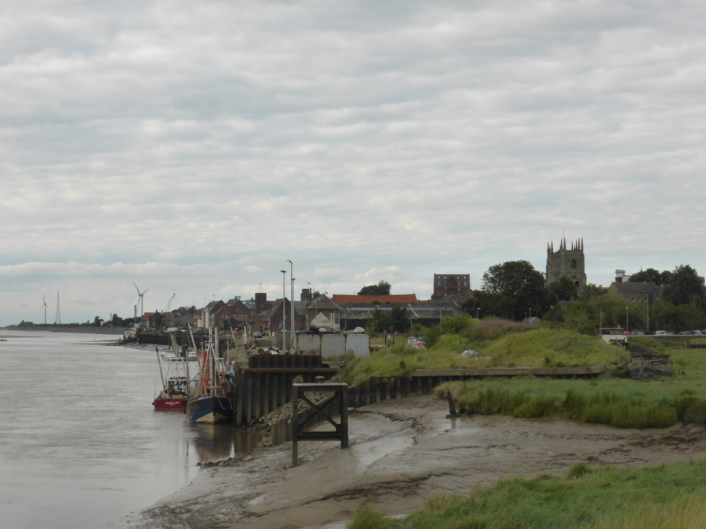

God Save The Queen Posted on August 14, 2017
..her fascist Regime!
Tag 10
Zeewolde - Hoek van Holland 131 km
Früh am morgen fuhr ich los, da ich die ganzen 131 km bis Hoek van Holland fahren wollte. Von dort hatte ich für den darauf folgenden Tag die Fähre nach England gebucht. Natürlich hatte ich nicht einmal 5 km nachdem ich das Camp verlassen hatte einen Platten. Es wehte den ganzen Tag ein leichter Seiten- oder Gegenwind so dass ich nur mühsam vorran kam. Gegen Abend war ich froh, als ich einen Campingplatz unweit des Fähranlegers gefunden hatte.
Tag 11
Hoek van Holland - Ramsey ~10 km
Am Fähranlieger angekommen, musste ich feststellen, dass bei meinem eBook-Reader das Display gebrochen war. Als kleinen Trost habe ich auf der Fähre einen Sitzplatz neben einer Steckdose gefunden, sodass ich mir mit dem Laptop die Zeit verteiben konnte. In England angekommen machte ich mich direkt auf zu dem Pub mit Zeltplatz, was ich vorher rausgesucht hatte. Nachdem das Zelt aufgebaut war speiste ich noch im Pub und fiel dann ins Bett.
Tag 12
Ramsey - Larling 100 km
Am Nachmittag kam ich an einen Campingplatz, der an einer Schotterpiste mitten im Wald lag. Leider wollte man dort ein kleines Vermögen für einen einfachen Zeltplatz also fuhr ich über die holprigen Waldwege zurück zur Straße. Gegen Abend fand ich dann wieder ein Pub mit angeschlossenen Campingplatz zu einem angemessenen Preis.
Tag 13
Larling - Sutton St. James 108 km
In dem netten Ort Castle Acres fand ich einen kleinen Buchladen, der gebrauchte Bücher für einen guten Zweck veräußerte. Außerdem gab es in dem Ort eine Burg- sowie eine Klosterruine zu besichtigen Kurz darauf holte ich mir schon wieder einen Platten. Nachdem ich den Schlauch geflickt hatte ging es dann aber auch direkt weiter. Kurz vor King’s Lynn sah ich ein Schild am Straßenrand, das auf einen Fahrradverkauf aufmerksam machte, ich bog kurzerhand dort ab, schwätzte kurz mit dem Besitzer, der mit seinem Kompressor den Luftdruck in meinem Hinterreifen wieder auf ein angemessenes Level brachte.  Nach King’s Lynn wandelte sich die Landschaft sehr plötzlich. Von einer hügeligen, mit Wäldern durchsetzten, Landschaft hin zum platten Land. So weit das Auge reicht nur Felder. Die Suche nach einem Platz zum Zelten gestaltete sich entsprechend schwierig. Bei dem vierten Platz, den ich anfuhr hatte ich schließlich Erfolg. Nachdem ich das Zelt aufgebaut hatte war es auch schon dunkel geworden.